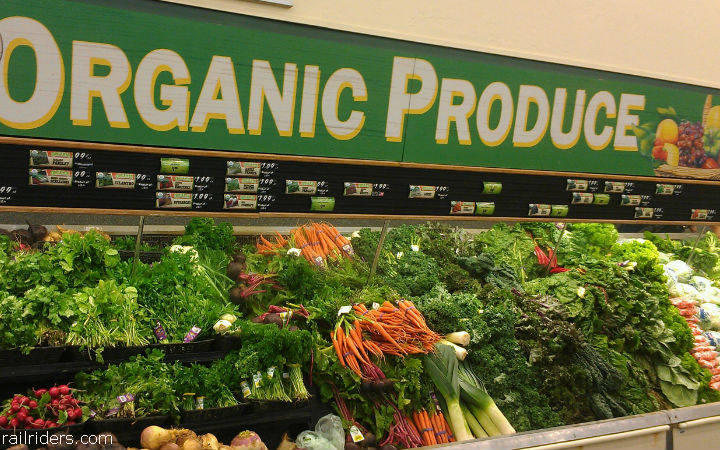

Welcome to Organic Frams, your gateway to premium organic offerings that redefine the essence of taste, authenticity, and well-being. Founded by Jyothirmai, our brand is driven by a passion for healthy living and a commitment to spreading awarenwss about the positive impact of organic foods on lifestyle. With a dedication to quality, we take you on a journey back to your roots, where ancient methods and traditions converge to create products that are truly exceptional.
At Organic Farms, our Unique Selling Proposition(USP) lies in the highest quality, offering an array of extermely premium items. Each product preserves the true taste of nature.